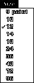
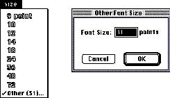

|
The Size MenuThe Size menu provides size choices for fonts. Font sizes are measured in points. A point is a typographical unit of measure equivalent to 1/72 inch. Indicate the current font size with a checkmark. As described in the section "Checkmarks and Dashes in Menus," which begins on page 57, use dashes to indicate when more than one font size applies to the current selection. Figure 4-85 shows a typical Size menu. System 7 supports both bitmapped and TrueType fonts. To incorporate basic support for TrueType fonts into your application, provide support for all font sizes in your application. Don't set an upper limit for font sizes. Outline the font sizes in the menu for those sizes that appear in the user's System file. Use plain type for font sizes that aren't in the System file. If a TrueType font is present, outline all sizes of that font that you display in the menu. Provide a way for users to choose whatever font size they desire. One way that you can support TrueType fonts is to add an Other command to the end of the Size menu. When the user chooses Other, display a dialog box that allows the user to choose any available font size by typing in a text box. If the user enters a font size not currently on the menu, add a checkmark to the Other command and include the font size as part of the Other command name. Show the font size in parentheses after the word Other. If a selection contains more than one nonstandard size, include the word Mixed in parentheses following the word Other. In this case, leave the text box of the font size dialog box blank when the user chooses the Other (Mixed) command. Figure 4-86 displays a sample pull-down Size menu and font size dialog box. See Inside Macintosh: Text for more information on supporting fonts in your application. Figure 4-86 A sample pull-down Size menu and font size dialog box  It's possible to implement the Size and Style menus as submenus in a hierarchical menu. For information on doing so and the tradeoffs that you need to consider before implementing the menus this way, see the section "Hierarchical Menus," which begins on page 66. |